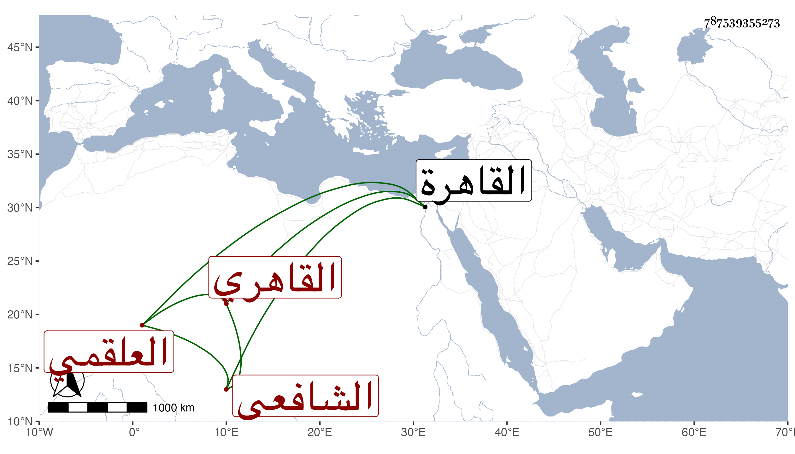

0902Sakhawi.DawLamic.ITO20230111-ara1.EIS1600.787539355273
Biography ID: 787539355273
539
محمد بن حسن بن أحمد بن حرمي بن مكي بن موسى البهاء أبو الفتح واقتصروا في عرضه في تسميته على أبي بكر وجعلوا أبا الفتح كنية أبن البدر العلقمي القاهري الشافعي الماضي أبوه ويعرف ببهاء الدين العلقمي . ولد في ربيع الآخر سنة خمس وثمانمائة بالقاهرة ونشأ بها فحفظ القرآن عند الشهاب الدموهي وجود بعضه على الزراتيتي والعمدة والنخبة لشيخنا وألفية العراقي والمنهاج الفرعي ومختصر ابن الحاجب الأصلي ونظمه للجلال البلقيني المسمى بالتحفة وهو في ألف بيت وثلثمائة وألفية ابن مالك والتسهيل والجعبرية والياسمينية في الجبر والمقابلة ومنظومة ابن سينا في الطب وعرض على خلق منهم العز بن جماعة والجلال البلقيني وعليه قرأ جميع التحفة له في ثلاثة مجالس وأعطاه جائزتها ألفا وبالغ في إكرامه بحيث أنه ركب من باب منزله وهو واقف ، واشتغل في الفقه على البيحوري والبرماوي بل هو الذي كان يصحح له محافيظه والشهاب الطنتدائي والشرف السبكي وابن المجدي وعنه أخذ في الفرائض والحساب والشطنوفي وعنه أخذ في العربية أيضا وعرف في صغره بقوة الحافظة بحيث كان لوحه مائة سطر ولا يتكلف لحفظه ، وقد وصفه شيخنا في عرضه بالحفظة المدرة أعجوبة العصر ذكاء نادرة الدهر نجابة ورواء أسعد الله جده وأقربه عين أبيه ورحم جده ، وسمع علي ابن الكويك والولي العراقي وشيخنا ولازمهما بمجلس إملائهما والواسطي وغيرهم وتكسب بالشهادة وبالمباشرة في عدة جهات وناب في القضاء ، وحج غير مرة وتنزل في الجهات وحدث باليسير سمعت منه قطعة من التحفة وحضر عندي بعض مجالس الإملاء وكان ساكنا متوددا عاقلا حسن العشرة والأخلاق بساما حصل له ارتعاش فدام به حتى مات في شوال سنة اثنتين وثمانين رحمه الله وإيانا .
